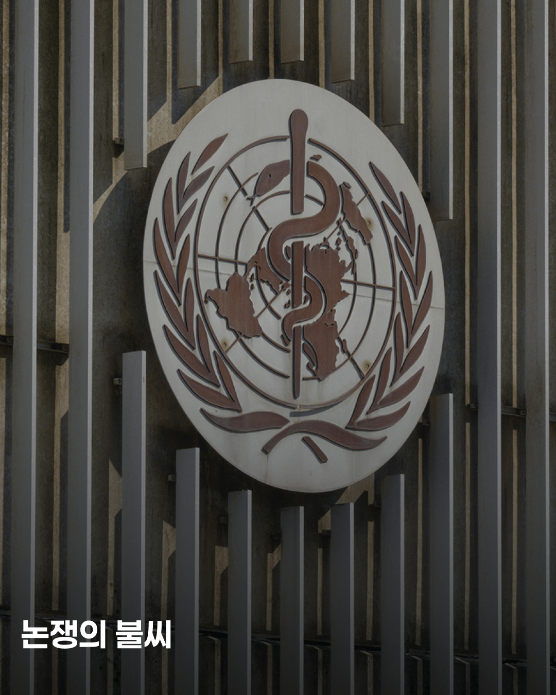
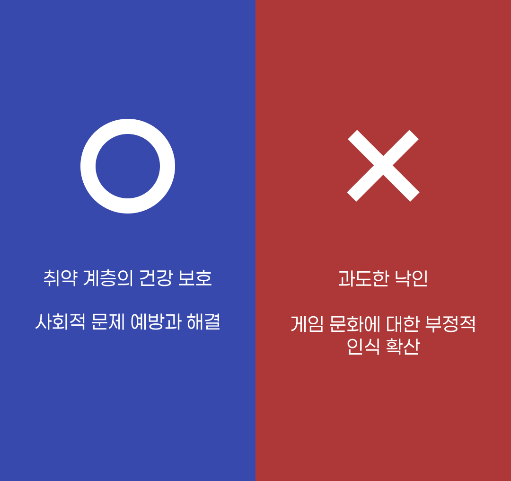

게임 중독 질병화 논쟁
정말 ‘아이’를
위한 선택인가요?
위한 선택인가요?
정의로
가득 찬 목소리.

“아이들의 미래를 위해”
“게임으로 인한 범죄 예방을 위해”
그들의 목소리는 정말 정의로울까?
논쟁의 불씨.
WHO의 질병코드 부여
2019년 5월, WHO는 제72차 총회에서 ‘게임 이용 장애’를 포함한 제11차 국제질병표준분류기준 개정안을 최종 의결했다. 이 결정은 전 세계적으로 큰 파장을 일으켰다.
찬성과 반대의 대립.

질병 코드 부여 이후, 양측이 근거를 들며 질병화에 대한 논쟁이 시작되었다.
질병화 찬성
찬성 측은 공식적 질병 코드 등재가 긍정적 효과를 가져온다.
첫째, 진단 기준을 표준화해 연구와 통계 수집을 용이하게 한다.
둘째, 예방 및 치료 프로그램 개발을 위한 법적, 제도적 기반이 마련된다.
취약계층을 사회 안전망 안으로 포섭하고, 잠재적 사회 문제를 예방
질병화 반대
반대 측은 반론을 제기했다. 가장 큰 우려는 과도한 낙인 효과다. 전세계적으로 30억 명 이상의 사람들이 게임을 즐기는 상황에서, 질병으로 규정하는 것은 대다수의 이용자들에 잠재적 정신질환자라는 낙인을 찍는 행위라는 것.
게임 산업계는, 객관적인 연구는 게임이 중독적이지 않다는 것을 증명한다고 주장했다.
학계에서도 비판의 목소리가 높았다. 결정이 시기상조이며, 부적절하게 게이머를 병리화할 위험이 있다고 경고했다. 문화 자체에 대한 부정적 인식을 확산시키고, 정상적인 열정과 병적인 집착을 구분하지 못하게 만들 수 있다고 지적했다.